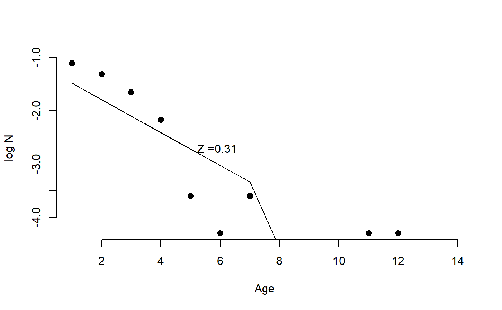

CC.RdAge-based Catch Curve
CC(x, Data, reps = 100, plot = FALSE)
| x | Iteration number |
|---|---|
| Data | An object of class |
| reps | Number of reps |
| plot | Logical. Show the plot? |
A vector of length reps of samples of the negative slope of the catch-curve (Z)
#> [1] 0.6241071 0.5786357 0.6421666 0.5961360 0.5911458 0.5464664 0.5752025 #> [8] 0.6130665 0.5597656 0.6187873 0.5799822 0.6483727 0.5333302 0.6831544 #> [15] 0.6194821 0.6172385 0.6512149 0.6042051 0.6495542 0.7133559 0.6157074 #> [22] 0.5705580 0.6211021 0.6830044 0.5686991 0.6802336 0.5830557 0.6134074 #> [29] 0.5830469 0.5814476 0.5609090 0.5927823 0.5550638 0.7145360 0.5456441 #> [36] 0.6447252 0.5985364 0.5595944 0.6937541 0.5840184 0.5822591 0.5679859 #> [43] 0.7272805 0.6310154 0.6644463 0.5863756 0.5777830 0.6437784 0.6222465 #> [50] 0.6840373 0.6667689 0.6214380 0.5773190 0.6795355 0.5684598 0.6616411 #> [57] 0.5986711 0.5487520 0.5464790 0.6293777 0.6206788 0.6802741 0.6404282 #> [64] 0.6014105 0.5853572 0.5872086 0.6428320 0.5995241 0.6102153 0.6111042 #> [71] 0.5290785 0.5233828 0.5475434 0.6112481 0.7013800 0.6609298 0.5915742 #> [78] 0.6733782 0.6000708 0.6098703 0.5113635 0.5496906 0.6337003 0.6353828 #> [85] 0.6967212 0.5828651 0.6069525 0.5374560 0.5697518 0.5268708 0.5386245 #> [92] 0.6090049 0.6259175 0.6445073 0.5926341 0.6481492 0.6302597 0.5365788 #> [99] 0.5814829 0.6493847